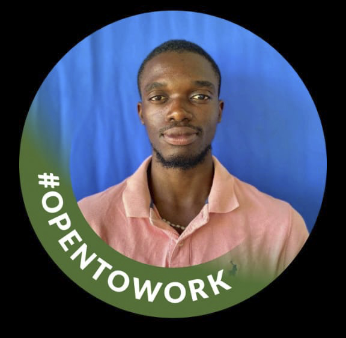

Curious about technology. Focused on building.
My name is Alfred Mwai Banda. I am a Computer Science student at DMI St John the Baptist University, where I develop my programming and problem-solving skills through coursework and practical, real-world projects.
I am drawn to technology that solves genuine problems. I enjoy learning how software is designed, built, and secured, and I am especially focused on software development, cybersecurity, and data analytics — turning ideas into working, maintainable products.
I am open to internship opportunities and collaboration where I can contribute, learn from experienced engineers, and continue growing as a developer.

Add your portrait at assets/profile.jpg
Education
Computer Science
DMI St John the Baptist University
Focus areas
Software · Security · Data
Practical problem-solving and continued learning
Availability
Open to internships
Collaboration and entry-level roles
Location
Malawi
Open to remote and on-site opportunities
Core competencies
Software Development
85%
Cybersecurity
45%
Data Analytics
40%
Frontend (React · TypeScript · Vite)
80%
Mobile (Flutter · Dart)
70%
Version Control (Git)
75%
Areas of interest
Web Applications
Mobile Security
Data Visualization
QR-based Systems
Offline-first Apps
Clean, Maintainable Code
Experience
Present
Computer Science Student
DMI St John the Baptist University — Software development, cybersecurity, and data analytics coursework
2024
Oasis Infobyte Internship
Python programming internship — hands-on projects and problem-solving practice